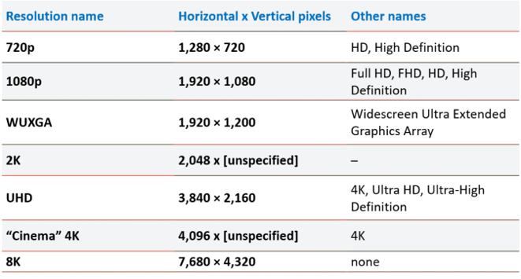
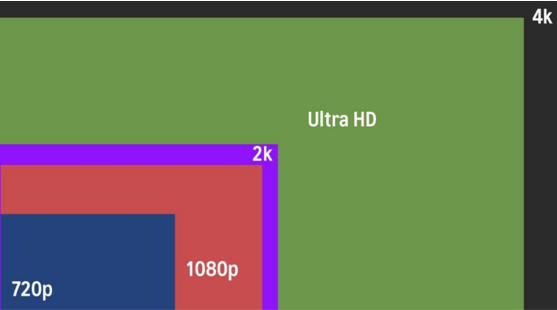

Resolution
Resolution คือ ความละเอียดในการแสดงผลของภาพ โดยจะกำหนดเป็น เมกะพิกเซล ยิ่งมีค่ามากก็จะยิ่งมีความละเอียดสูง โดยกำหนดจาก จำนวนเม็ดสี (Pixel) ต่อหนึ่งหน่วยความยาวของภาพ ตัวเลขใน resolution หมายถึงจำนวน pixel ที่แสดงอยู่บนหน้าจอ เป็นจุดๆ หลายจุดรวมกัน ซึ่งยิ่งปริมาณ pixel มีจำนวนมาก ก็ยิ่งแสดงผลภาพได้ละเอียดมากขึ้นนั่นเองเช่น ถ้าเราเห็นความละเอียดวิดีโอ 1920×1080 pixel หมายความว่าวิดีโอนั้นมีความกว้าง 1920 pixel และ ความยาว 1080 pixel ซึ่งรวมกันทั้งหมดคือ 2,073,600 pixel นั่นเอง ตัวเลขที่ใช้บอกความละเอียดของวิดีโอโดยทั่วไป ถ้าไม่ใช่ในงานตัดต่อวิดีโอ จะไม่ค่อยได้เห็นการบอกความละเอียดแบบด้านบนที่กล่าวมา แต่จะแจ้งเป็นประมาณว่า 720p, 1080p, SD, Full HD เป็นต้น ยกตัวอย่าง เช่น 720p เลข 720 คือความละเอียดของวิดีโอในแนวตั้ง ตัว p ย่อมาจาก Progressive Scan (ไม่ใช่ pixel) วิดีโอที่เขียนว่าความละเอียด 720p จะหมายถึง 1280×720 pixel


วิดีโอบนที่เราอัพโหลดขึ้นไปบน Social Network จะแสดงผลในสัดส่วนมาตรฐาน 16:9 ซึ่งถ้าผิดไปจากนี้ตัวเล่นมักจะเพิ่มแถบสีดำเข้ามาโดยอัตโนมัติเพื่อให้กลายเป็น 16:9 เพื่อให้วิดีโอมีขนาดพอดีกับโปรแกรมเล่น
อย่างสมบูรณ์ให้เข้ารหัสที่ความละเอียดต่อไปนี้
2160p: 3840×2160
1440p: 2560×1440
1080p: 1920×1080
720p: 1280×720
480p: 854×480
360p: 640×360
240p: 426×240
Frame Rate
240p:Frame Rate คือการแสดงผลภาพนิ่งหลายๆภาพต่อหน่วยวินาที เพื่อให้เห็นเป็นภาพเคลื่อนไหว
(Frame Per Second) หรือที่เรียกกันสั้นๆว่า เฟรมเรท ซึ่งเฟรมเรทนี้ก็คือจำนวนเฟรม (จำนวนภาพนิ่ง) โดยมีหน่วยเป็น Per Second (กี่ภาพต่อวินาที) เช่น 30 FPS คือ ใน 1 วินาทีจะมีภาพนิ่งต่อเนื่องกัน 30 ภาพ